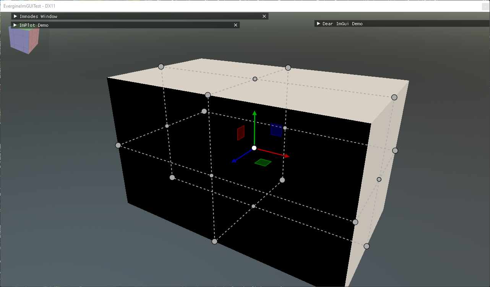
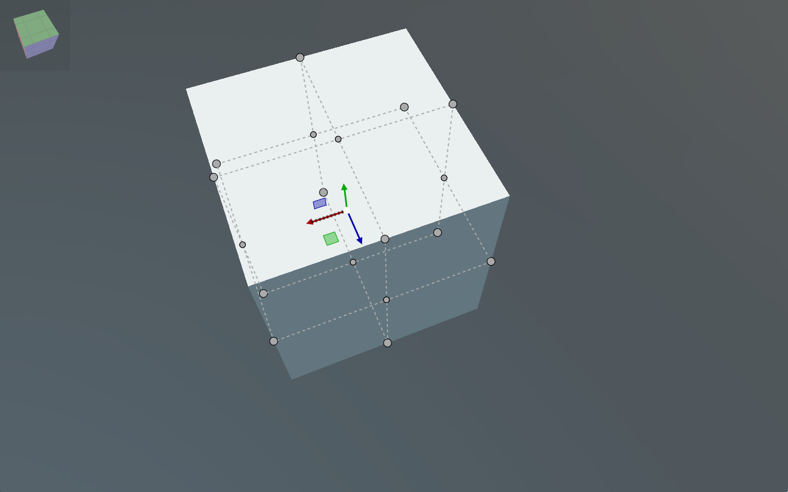
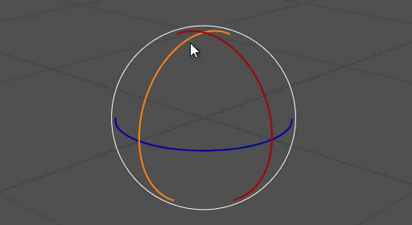
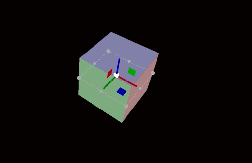
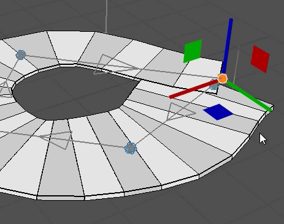
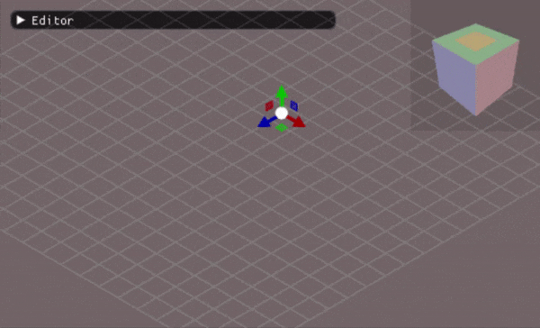

ImGuizmo

ImGuizmo draws 3D manipulation gizmos with Dear ImGui: the arrows, rings and handles that editors use to move, rotate and scale an object, and a view cube that orients the camera. It works directly on 4x4 matrices. You give it the camera's view and projection and the object's world matrix, the user drags a handle, and ImGuizmo writes the new world matrix back. Use it to add in-scene editing to a tool without writing the picking and drag math yourself.
The C# bindings cover the core ImGuizmo module: Manipulate, ViewManipulate, the grid and cube helpers, and the state queries. The other widgets of the ImGuizmo project, such as the sequencer and the graph editor, are not part of the binding.
Enable ImGuizmo
ImGuiManager connects ImGuizmo to its ImGui context and starts an ImGuizmo frame every frame only when ImGuizmoEnabled is set:
this.Managers.AddManager(new ImGuiManager()
{
ImGuizmoEnabled = true,
});
The functions are in ImguizmoNative, and the OPERATION and MODE enums in the same Evergine.Bindings.Imguizmo namespace.
Manipulate an entity
ImGuizmo_Manipulate draws the gizmo for one matrix and applies the user's drag to it. It returns true on the frames in which the matrix changed. The matrices are passed as float*, which the Pointer() extension method from Evergine.UI provides for a Matrix4x4 field.
This component, adapted from the Manipulation component of the ImGui-Demo project, puts a gizmo on the entity it is attached to and adds a small window to choose the operation:
using Evergine.Bindings.Imgui;
using Evergine.Bindings.Imguizmo;
using Evergine.Framework;
using Evergine.Framework.Graphics;
using Evergine.Mathematics;
using Evergine.UI;
using System;
public unsafe class Manipulation : Behavior
{
[BindComponent]
private Transform3D transform = null;
// ImGuizmo reads and writes these through pointers, so they are fields.
private Matrix4x4 view;
private Matrix4x4 projection;
private Matrix4x4 world;
// Local bounds of the object (min xyz, max xyz), used by OPERATION.BOUNDS.
private float[] bounds = { -0.5f, -0.5f, -0.5f, 0.5f, 0.5f, 0.5f };
private OPERATION operation = OPERATION.TRANSLATE;
private MODE mode = MODE.WORLD;
protected override void Update(TimeSpan gameTime)
{
// A small window to choose what the gizmo does.
ImguiNative.igSetNextWindowPos(new Vector2(10, 10), ImGuiCond.FirstUseEver, Vector2.Zero);
if (ImguiNative.igBegin("Gizmo", null, ImGuiWindowFlags.AlwaysAutoResize))
{
if (ImguiNative.igRadioButton_Bool("Translate", this.operation == OPERATION.TRANSLATE)) this.operation = OPERATION.TRANSLATE;
ImguiNative.igSameLine(0, -1);
if (ImguiNative.igRadioButton_Bool("Rotate", this.operation == OPERATION.ROTATE)) this.operation = OPERATION.ROTATE;
ImguiNative.igSameLine(0, -1);
if (ImguiNative.igRadioButton_Bool("Scale", this.operation == OPERATION.SCALE)) this.operation = OPERATION.SCALE;
ImguiNative.igSameLine(0, -1);
if (ImguiNative.igRadioButton_Bool("Bounds", this.operation == (OPERATION.TRANSLATE | OPERATION.BOUNDS))) this.operation = OPERATION.TRANSLATE | OPERATION.BOUNDS;
if (ImguiNative.igRadioButton_Bool("World", this.mode == MODE.WORLD)) this.mode = MODE.WORLD;
ImguiNative.igSameLine(0, -1);
if (ImguiNative.igRadioButton_Bool("Local", this.mode == MODE.LOCAL)) this.mode = MODE.LOCAL;
}
ImguiNative.igEnd();
// The gizmo can be drawn anywhere on screen: use the whole display.
var io = ImguiNative.igGetIO_Nil();
ImguizmoNative.ImGuizmo_SetRect(0, 0, io->DisplaySize.X, io->DisplaySize.Y);
var camera = this.Managers.RenderManager.ActiveCamera3D;
this.view = camera.View;
this.projection = camera.Projection;
this.world = this.transform.WorldTransform;
fixed (float* boundsPointer = this.bounds)
{
float* localBounds = (this.operation & OPERATION.BOUNDS) != 0 ? boundsPointer : null;
if (ImguizmoNative.ImGuizmo_Manipulate(this.view.Pointer(), this.projection.Pointer(), this.operation, this.mode, this.world.Pointer(), null, null, localBounds, null))
{
this.transform.WorldTransform = this.world;
}
}
}
}


OPERATION is a set of flags, so you can combine handles: TRANSLATE_X | TRANSLATE_Z limits the move to the ground plane, and UNIVERSAL shows translation, rotation and scale together. MODE.LOCAL aligns the handles with the object's axes instead of the world's; scaling always happens in local space.
Adding OPERATION.BOUNDS shows handles on the faces and corners of the box given by localBounds, which resize the object like a selection box in a 2D editor.


Snapping
The snap argument, left as null above, is a pointer to three floats: the step for each axis when translating, the angle in degrees when rotating (only the first value is used), or the scale step. Pass it only while you want snapping, for example while Ctrl is held. Add a field for the steps:
// A field, like the matrices: 0.5 units, or 15 degrees when rotating.
private float[] snap = { 0.5f, 0.5f, 0.5f };
Then replace the ImGuizmo_Manipulate call in Update():
fixed (float* snapPointer = this.snap)
{
float* activeSnap = io->KeyCtrl != 0 ? snapPointer : null;
ImguizmoNative.ImGuizmo_Manipulate(this.view.Pointer(), this.projection.Pointer(), this.operation, this.mode, this.world.Pointer(), null, activeSnap, null, null);
}
Orient the camera with a view cube
ImGuizmo_ViewManipulate_Float draws a cube that shows the camera's orientation. Clicking a face turns the view to look along that axis, and dragging the cube orbits the camera around a point at the given distance. It edits a view matrix, so convert the result back into the camera's transform by inverting it:
using Evergine.Bindings.Imgui;
using Evergine.Bindings.Imguizmo;
using Evergine.Framework;
using Evergine.Mathematics;
using Evergine.UI;
using System;
public unsafe class ViewCube : Behavior
{
private Matrix4x4 view;
protected override void Update(TimeSpan gameTime)
{
var camera = this.Managers.RenderManager.ActiveCamera3D;
this.view = camera.View;
// Distance of the orbit pivot, position and size of the cube, and background colour (ABGR).
ImguizmoNative.ImGuizmo_ViewManipulate_Float(this.view.Pointer(), 2, Vector2.Zero, new Vector2(128, 128), 0x10101010);
// The inverse of the view matrix is the camera's world transform.
Matrix4x4.Invert(ref this.view, out Matrix4x4 cameraWorld);
camera.Transform.LocalPosition = cameraWorld.Translation;
camera.Transform.LocalRotation = cameraWorld.Rotation;
}
}

Note
The view cube assigns the camera's position every frame. Disable any camera controller on the same camera, or it will fight the cube for the transform.
Helpers and queries
| Function | Description |
|---|---|
ImGuizmo_DrawGrid(view, projection, matrix, gridSize) |
Draws a grid on the plane defined by matrix, for example Matrix4x4.Identity for the ground. |
ImGuizmo_DrawCubes(view, projection, matrices, count) |
Draws unit cubes with the given world matrices, useful to preview placements. |
ImGuizmo_IsOver_Nil() |
true while the mouse is over a gizmo handle. |
ImGuizmo_IsUsing() |
true while the user is dragging a handle. Check it to stop other input, such as camera orbit, from reacting to the same drag. |
ImGuizmo_Enable(bool) |
Shows the gizmo without accepting input when false. |
ImGuizmo_SetOrthographic(bool) |
Tells ImGuizmo that the projection is orthographic, which changes how handles are sized. |
ImGuizmo_SetID(int) or ImGuizmo_PushID_Int(int) / ImGuizmo_PopID() |
Gives each gizmo its own identity when you draw several in one frame. |
ImGuizmo_DecomposeMatrixToComponents and ImGuizmo_RecomposeMatrixFromComponents |
Convert between a matrix and translation, rotation (degrees) and scale arrays, for numeric editing next to the gizmo. |